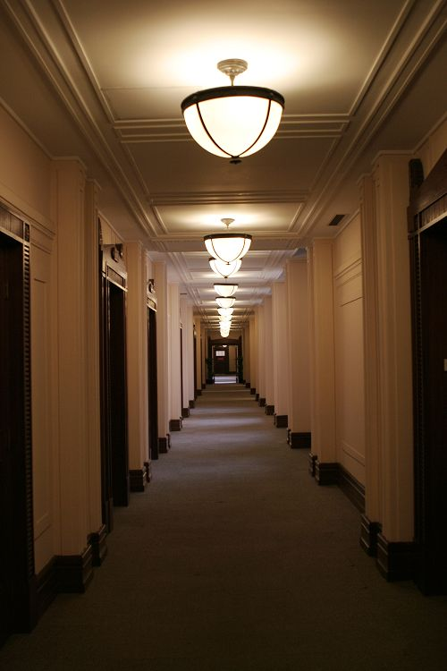

奔波 @ Sep 10, 2009
5点前起床，洗漱完一照镜子，哇噻！眼睛里好多红血丝！驾车往火车站赶，未过6点，隧道口挤了好些大大小小的车，那场景象商场狂购夜就等放人然后冲进去买个痛快一样一样的。清大八早地路上就没几辆车，不从隧道走会死啊？也好，你们等隧道，正好清场让我过。
9点到达上海，下了车直奔领馆拿签证，又是老长的队。。。如果去目的地可以象上下班那么短的路就好了，不过我连上下班的路都烦。这里要对横戈说抱歉，时间紧促当天来回，故不能共餐。这一天下来好疲惫，睡眠严重不足的情况下皮肤就象皱纹纸，浑身肌肉发酥，还带着相机准备无聊时自娱自乐。Angie：“带相机来也不说一声，我今天都没化妆。”如果抗着这老重的相机旅行是否会变革为“驴行”？真是难为我自己~
午饭后和Angie四仰八叉地躺在她公司会议室里，听她讲墙上的发财鱼，讲它们怎么从小长大，怎么从害怕人到不害怕人，怎么嬉戏打斗。。。慵懒地聊着各种话题，聊得我不想走了，转念想想她指着附近建筑这栋4万一平那栋5万一平的情形，估计所有移居上海的人资产会缩水1/3吧？还是回南京吧~
*********更多照片************



Angie：“哎，怎么后面清楚前面不清楚啊？”
。。。。。。反正就没把我拍清楚过。这个举例说明是给Helen看的，旅行期间请务必把我拍清楚，谢谢！

12 Responses to “奔波”
2009-09-10
真好，高兴。托梦～
2009-09-11
搞定了吧，真有劲还更新。
这火车是啥型号，我怎么没坐过
2009-09-11
簽證好像是西班牙語？雖是申根，也有不同版本呢。
2009-09-11
即将开始的旅程
2009-09-11
是哎，申根签证每个国家的设计都不一样呢，并且领馆的服务水平和态度也是层次不齐，大领馆和小领馆还是有区别的。比如这次就必须是本人送签，也必须是本人去拿签证，不管是否获得签证，压根不会邮寄给你！
问问，这也是动车啊。
2009-09-11
原来你在例证反面教材。。
2009-09-11
就要启程啦！期待你来自旅途中的美文美景和美照哦。
2009-09-11
终于可以飞了~~小激动呢
2009-09-11
累并快乐着!
2009-09-11
恭喜LZ顺利下签
2009-09-11
头顶佛光普照，visado显灵了
2009-09-14
去香港只要有他国签注和机票订票记录就可以去香港并可停留7日，不需要再办其他证件。
在深圳等你。
Leave A Reply
存档只读，评论已关闭。